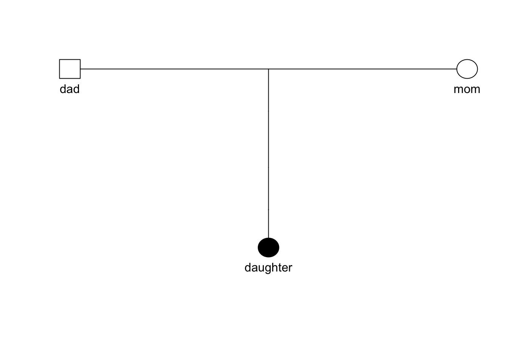
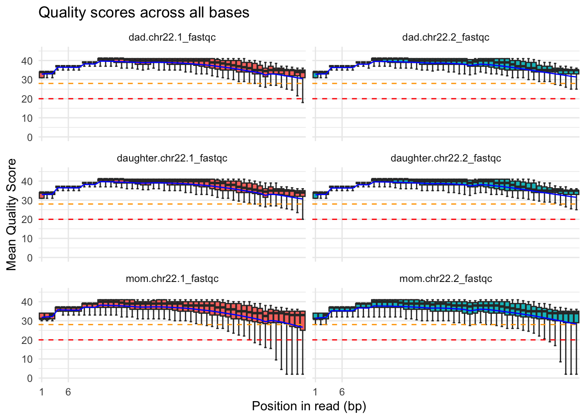

Case report: CEDNIK SYNDROME
Aims
You will receive a set of exome data for a family trio to identify a disease-causing variant using the tools presented in the course. Your task for this case report is to summarize the steps leading to the causal variant and to reflect on how you get there. Your report should be reproducible using RMarkdown and code where possible.
Minimally include two graphs and two computed tables in the Results sections that are purely produced from code. Use computed results in the text at least twice. There are many possibilities in this report.
Extra efforts, not required
- Use of a bibliography
- All figures produced from code
- All numbers produced from code
Collaboration
- You are free to support each other in programming but do not exchange code blocks. There will be questions on the code you wrote. In exceptional cases you can indicate that code was developed by others.
- If you are stuck, reach out to the tutors.
- If you collaborate, please indicate in the report.
Introduction
Neurocutaneous syndrome, characterized by cerebral dysgenesis, neuropathy, ichthyosis, and keratoderma, or CEDNIK syndrome for short, is a autosomal recessive genetic disorder1. This disease is caused by a loss-of-function variant in SNAP29 (synaptosomal-associated protein 29), which encodes a SNARE protein, a vesicular membrane fusion protein2. Symptoms of the disease Microcephaly, Global developmental delay, Ataxia, Ichthyosis, Diffuse palmoplantar hyperkeratosis.
This syndrome was first discovered in 2005— within the 22q11.2 region and the SNAP29 gene —using homozygosity mapping on two unrelated families with a history of consanguineous marriage that exhibited similar symptoms3. In the subsequent years, up to 2021, nearly 20 variants of this syndrome were discovered4.
CEDNIK syndrome is an extremely rare disorder, with an estimated prevalence of less than 1 per 1,000,000 individuals; a reliable population-based incidence has not been established due to the small number of reported cases5.
Variant detection and diagnosis have become much more accessible with the advent of next-generation sequencing (NGS). Unlike earlier sequencing technologies, NGS enables the simultaneous analysis of anything from a few genes to hundreds of genes, the entire exome, or even the whole genome. NGS systems employ approaches such as whole-genome sequencing (WGS) and whole-exome sequencing (WES)6.
In this report, we focus on WES because Sydnik syndrome is a Mendelian monogenic disorder; identifying variations within the exons alone is generally sufficient for its detection. In the case we analyzed, a 3-year-old girl exhibited symptoms of the syndrome while her parents were healthy; therefore, our objective was to perform WES for this family of three and identify the variant by comparing the results against the reference human genome (GRCh37/hg19). This type of analytical method is known as “trio analysis”7, and given that this syndrome is an autosomal recessive disorder, we can infer that both parents are heterozygous carriers1.
Study Participants/Whole exome sequencing
The base of our work is publicly available genetic data from a Spanish family, consisting of a father, mother and their daughter, referred to as “the Corpasome”8. In our case the genome of the daughter is synthetically altered and a disease phenotype called CEDNIK Syndrome, caused by these alterations, is diagnosed. Main symptoms are developmental delay and skin disorder. The latter mainfasting at the age of two in ichthyosis and thickening of palms and soles. Further, she has been diagnosed with microcephaly and poor motor development as well as impaired coordination. As Cednik Syndrome is an autosomal recessive inheritable disease and the parents are healthy, the father and mother both have one chromosome with the disease-causing variant and one without.
NGS data preprocessing
Next-Generation Sequencing (NGS) data preprocessing was used to refine and align raw reads prior to downstream Whole-Exome Sequencing (WES) analysis. The input dataset comprised individual raw FASTQ files corresponding to the family trio: mother, father, and affected child, from the Corpasome family. This tools are organized for each person as .fq files as paired-ends reads, 150 bp per read for R1 and R2.
For the Quality evaluation, we access to the “FastQC Report (version 0.12.1)” for each file. Using the raw data (.fq data files) as an input, we can graph and see the organization of the sequences, %GC percentage and the quality scores. We considerate the Q scores above 30 (Q30), in acordance to the standart Illumina quality trimming sequence9.
After the confirmation of the good quality of the sequences, we proceed with the allignment and trimming of information.
We processed the quantification of bp related to the harmful variants. for finding differential gene expresions.
Variant annotation and filtering
Results
QC
| Filename | Total Sequences | Total Bases | Sequence length | %GC |
|---|---|---|---|---|
| dad.chr22.1.fq | 443996 | 39.9 Mbp | 90 | 45 |
| dad.chr22.2.fq | 443996 | 39.9 Mbp | 90 | 45 |
| daughter.chr22.1.fq | 374416 | 33.6 Mbp | 90 | 45 |
| daughter.chr22.2.fq | 374416 | 33.6 Mbp | 90 | 45 |
| mom.chr22.1.fq | 388450 | 34.9 Mbp | 90 | 44 |
| mom.chr22.2.fq | 388450 | 34.9 Mbp | 90 | 44 |
To begin the WES analysis, it is important to build on raw-read data that fulfills the quality requirements. By assessing the quality of the fastq file, it can be assured that later interpretation is not based on technical errors. Regarding the Corpasome data, the sequence length for all samples is as expected as well as the GC percentage with small variations in the reads of the mother displaying a percentage of 44 compared to 45% in the father and daughter. The number of total sequences as well as the number of bases measured is the same for read 1 and read 2 in each family member, whereas the number varies between different persons. The maximal difference can be found between the father and the daughter where the father has 6.3 Mbp more. These differences, however, lie within the natural range of variation of genome sizes. (check reference!)

The boxplot depicts the mean quality score per position in each read separately for read 1 and read 2 in the father, mother and daughter. For each sample the last positions of some reads fall beneath the threshold of a quality score of 30 while the best quality scores are achieved for positions in the middle of the read. Especially in the reads coming from the mother, quality scores beneath 20 are achieved. However, for all positions in all samples the median remains at a quality score above 30 meaning that no reads need to be shortened for the downstream analysis. Nevertheless, it is important to remark that the samples derived from the mother show the lowest quality across different metrics.(which ones)
From the quality control regarding the raw sequencing data, there is no detectable issue that would affect further analysis. Furthermore, in the following steps, more metrics will be assessed to assure correct variant calling.
- Summarize QC results from Fastqc: (1 paragraph)
- one table summarizing read statistics for all three samples and
- show one read quality metric for all samples in one figure.
Sample processing
- Table with read statistics (read numbers for each processing step including total number, after initial mapping, after duplicate removal, etc.). What is the outcome of the NGS workflow?
Variant calling/filtering
- How many variants were in the raw sample output and then called in the initial
bcffiles, in thevcffile filtered for read depth and finally in the demultiplexedvcffile? What means demultiplexing here? - How many variants were finally called over all samples and annotated using ANNOVAR? How many variants remaining after each filtering step (1 or 2 tables)? Describe impact of each filtering step by number of qualifying variants.
- How many exonic/intronic variants were called? (1-2 sentences, 1 table). Were there any variants related to alternative splicing?
- How many different exonic variant types (nonsynonymous/synonymous/frameshift/non-frameshiftindels/etc) were called? (1-2 sentences, 1 table).
- QC measures: calculate and discuss
- transistion/transversion ratio
- nonsynonymous/synonymous ratio
- Were variants found in candidate variants genes? If yes, with how many reads covered, what was the allele frequency of the alternative allele. Discuss quality of the calls. Report sequencing depth for all samples for candidate variant.
- Report gene coverage for all samples for candidate gene.
- Show variant in IGV from all three family members. Which mode of inheritance you have found and what is the support for it?
- Describe candidate variant and gene using databases.
- Check the current allele frequencies in gnoMAD for your variants (web)
- Annotate your variant with more scores and annotation using wANNOVAR and discuss if they support the hypothesis that the variant is disease causing
- Collect data about your variant and gene and the position of your variant from GeneCards, Uniprot, OMIM, GTEX. Is the variant located in a certain protein domain, does it is region where other disease-causing variants are located, is the protein/gene expressed in the tissue that you would expect?
- Use different tools for variant interpretation like MutationMapper, MuPIT, MTR-viewer, VSranker, ClinVar
- Have at least one figure that shows the location of the variant on the protein sequence, e.g. using MutationMapper or the R package G3viz
Discussion
Summary of analysis results.
Which variant and gene been found?
Is the mode of inheritance of your variant known or not known?
What evidence you have found that supports your hypothesis that you have found a causative variant?
Can you think of experiments that could show that you have found a disease-causing variant?
References
1.
Hsu, T., Coughlin, C.C., Monaghan, K.G., et al. (2017). CEDNIK: Phenotypic and molecular characterization of an additional patient and review of the literature. Child Neurology Open 4, 2329048X17733214. https://doi.org/10.1177/2329048X17733214.
2.
Schiller, S.A., Seebode, C., Wieser, G.L., Goebbels, S., M"obius, W., Horowitz, M., and Emmert, S. (2016). Establishment of two mouse models for CEDNIK syndrome reveals the pivotal role of SNAP29 in epidermal differentiation. Journal of Investigative Dermatology 136, 672–679. https://doi.org/10.1016/j.jid.2015.12.012.
3.
Sprecher, E., Ishida-Yamamoto, A., Mizrahi-Koren, M., Rapaport, D., Goldsher, D., Indelman, M., and Mandel, H. (2005). A mutation in SNAP29, coding for a SNARE protein involved in intracellular trafficking, causes a novel neurocutaneous syndrome characterized by cerebral dysgenesis, neuropathy, ichthyosis, and palmoplantar keratoderma. The American Journal of Human Genetics 77, 242–251. https://doi.org/10.1086/432588.
4.
Mah-Som, A.Y., Skrypnyk, C., Guerin, A., Seroor Jadah, R.H., Vardhan, V.N., McKinstry, R.C., and Shinawi, M.S. (2021). New cohort of patients with CEDNIK syndrome expands the phenotypic and genotypic spectra. Neurology: Genetics 7, e553. https://doi.org/10.1212/NXG.0000000000000553.
5.
Orphanet (n.d.). CEDNIK syndrome.
6.
Brancato, D., Treccarichi, S., Bruno, F., Coniglio, E., Vinci, M., Saccone, S., Cal‘i, F., and Federico, C. (2025). NGS approaches in clinical diagnostics: From workflow to disease-specific applications. International Journal of Molecular Sciences 26, 9597. https://doi.org/10.3390/ijms26199597.
7.
Gabriel, H., Korinth, D., Ritthaler, M., et al. (2022). Trio exome sequencing is highly relevant in prenatal diagnostics. Prenatal Diagnosis 42, 845–851. https://doi.org/10.1002/pd.6081.
8.
Corpas, M., Valdivia-Granda, W., Torres, N., Greshake, B., Coletta, A., Knaus, A., Harrison, A.P., Cariaso, M., Moran, F., Nielsen, F., et al. (2015). Crowdsourced direct-to-consumer genomic analysis of a family quartet. BMC Genomics 16, 910. https://doi.org/10.1186/s12864-015-1973-7.
9.
Illumina Quality scores for next-generation sequencing.